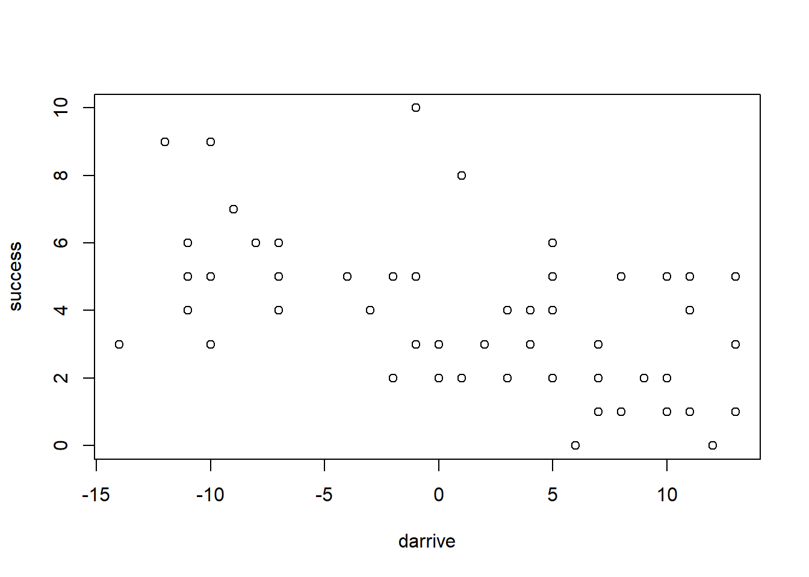
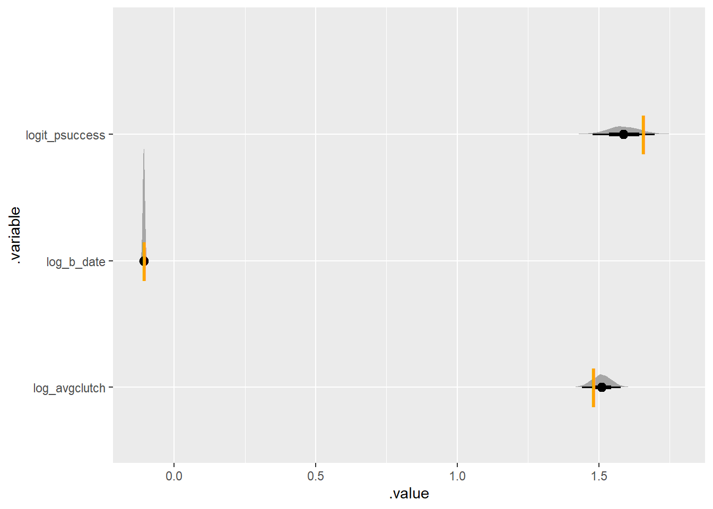

library(cmdstanr)
library(tidyverse)
library(tidybayes)The challenge
Studying selection on phenotypic plasticity is challenging. First, because phenotypic plasticity is a slope – it is the change in a trait when an environmental variable changes. Secondly, because many traits of animals also cause other traits. For example, arriving later at a breeding site causes an individual to lay fewer eggs (because less food is available).
The system
Let’s begin just with a simulation of three interrelated traits:
- The date when a bird arrives, which determines
- How many eggs they lay, out of which there is
- Some number of surviving offspring
## how many birds
nbirds <- 57
# simulate arrival dates -- two weeks before and after whatever the average is
darrive <- runif(nbirds, min = -14, max = 14) |> round()
## simulate clutch sizes -- decrease by 4% each day
avg_clutch <- 4.5
effect_per_day <- .97
clutch <- rpois(nbirds, exp(log(avg_clutch) + log(effect_per_day)*darrive))
plot(darrive, clutch)
As an aside, this would be 0-truncated, since birds who don’t lay eggs don’t get observed at all.
# simulate hatching success
success <- rbinom(nbirds, size = clutch, prob = .86)
plot(darrive, success)
what’s important to see here is that there is a negative correlation, even though the arrival date has no direct effect on the outcome
summary(glm(success ~ darrive, family = "poisson"))
Call:
glm(formula = success ~ darrive, family = "poisson")
Coefficients:
Estimate Std. Error z value Pr(>|z|)
(Intercept) 1.330746 0.068901 19.314 < 2e-16 ***
darrive -0.039128 0.008791 -4.451 8.54e-06 ***
---
Signif. codes: 0 '***' 0.001 '**' 0.01 '*' 0.05 '.' 0.1 ' ' 1
(Dispersion parameter for poisson family taken to be 1)
Null deviance: 78.184 on 56 degrees of freedom
Residual deviance: 58.402 on 55 degrees of freedom
AIC: 232.38
Number of Fisher Scoring iterations: 5But, if we use a binomial model that knows about the number of possible successful chicks, then we see what we expect:
bin_mod <- (glm(cbind(success, clutch - success) ~ 1, family = binomial(link = "logit")))
plogis(coef(bin_mod))(Intercept)
0.8842975 Which matches the simulation above.
if we put darrive in the model, the effect should be very close to 0 with overlap.
If we imagine that the laying date effects the survival p, then we should see an effect close to 0
summary(glm(
cbind(success, clutch - success) ~ 1 + darrive,
family = binomial(link = "logit")))
Call:
glm(formula = cbind(success, clutch - success) ~ 1 + darrive,
family = binomial(link = "logit"))
Coefficients:
Estimate Std. Error z value Pr(>|z|)
(Intercept) 2.03026 0.20204 10.049 <2e-16 ***
darrive -0.03052 0.02683 -1.137 0.255
---
Signif. codes: 0 '***' 0.001 '**' 0.01 '*' 0.05 '.' 0.1 ' ' 1
(Dispersion parameter for binomial family taken to be 1)
Null deviance: 63.900 on 55 degrees of freedom
Residual deviance: 62.595 on 54 degrees of freedom
AIC: 102.23
Number of Fisher Scoring iterations: 4One Stan model can model all of these at the same time
one_indiv <- cmdstanr::cmdstan_model(
here::here("posts/2023-02-02-selection-on-plasticity/one_indiv.stan"))In file included from stan/src/stan/model/model_header.hpp:11:
stan/src/stan/model/model_base_crtp.hpp:198: warning: 'void stan::model::model_base_crtp<M>::write_array(boost::random::ecuyer1988&, std::vector<double, std::allocator<double> >&, std::vector<int>&, std::vector<double, std::allocator<double> >&, bool, bool, std::ostream*) const [with M = one_indiv_model_namespace::one_indiv_model; boost::random::ecuyer1988 = boost::random::additive_combine_engine<boost::random::linear_congruential_engine<unsigned int, 40014, 0, 2147483563>, boost::random::linear_congruential_engine<unsigned int, 40692, 0, 2147483399> >; std::ostream = std::basic_ostream<char>]' was hidden [-Woverloaded-virtual=]
198 | void write_array(boost::ecuyer1988& rng, std::vector<double>& theta,
| C:/Users/UTILIS~1/AppData/Local/Temp/RtmpAv8s8z/model-2870599e2fe2.hpp:349: note: by 'one_indiv_model_namespace::one_indiv_model::write_array'
349 | write_array(RNG& base_rng, std::vector<double>& params_r, std::vector<int>&
| stan/src/stan/model/model_base_crtp.hpp:136: warning: 'void stan::model::model_base_crtp<M>::write_array(boost::random::ecuyer1988&, Eigen::VectorXd&, Eigen::VectorXd&, bool, bool, std::ostream*) const [with M = one_indiv_model_namespace::one_indiv_model; boost::random::ecuyer1988 = boost::random::additive_combine_engine<boost::random::linear_congruential_engine<unsigned int, 40014, 0, 2147483563>, boost::random::linear_congruential_engine<unsigned int, 40692, 0, 2147483399> >; Eigen::VectorXd = Eigen::Matrix<double, -1, 1>; std::ostream = std::basic_ostream<char>]' was hidden [-Woverloaded-virtual=]
136 | void write_array(boost::ecuyer1988& rng, Eigen::VectorXd& theta,
| C:/Users/UTILIS~1/AppData/Local/Temp/RtmpAv8s8z/model-2870599e2fe2.hpp:349: note: by 'one_indiv_model_namespace::one_indiv_model::write_array'
349 | write_array(RNG& base_rng, std::vector<double>& params_r, std::vector<int>&
| one_indivdata{
int nbirds;
vector[nbirds] darrive;
array[nbirds] int clutch;
array[nbirds] int success;
}
parameters {
real logit_psuccess;
real log_avgclutch;
real log_b_date;
}
model {
success ~ binomial_logit(clutch, logit_psuccess);
clutch ~ poisson_log(log_avgclutch + log_b_date * darrive);
logit_psuccess ~ normal(1, .2);
log_avgclutch ~ normal(1, .2);
log_b_date ~ normal(0, .2);
}one_indiv_post <- one_indiv$sample(
data = list(nbirds = nbirds,
clutch = clutch,
success = success,
darrive = darrive))Running MCMC with 4 sequential chains...
Chain 1 Iteration: 1 / 2000 [ 0%] (Warmup)
Chain 1 Iteration: 100 / 2000 [ 5%] (Warmup)
Chain 1 Iteration: 200 / 2000 [ 10%] (Warmup)
Chain 1 Iteration: 300 / 2000 [ 15%] (Warmup)
Chain 1 Iteration: 400 / 2000 [ 20%] (Warmup)
Chain 1 Iteration: 500 / 2000 [ 25%] (Warmup)
Chain 1 Iteration: 600 / 2000 [ 30%] (Warmup)
Chain 1 Iteration: 700 / 2000 [ 35%] (Warmup)
Chain 1 Iteration: 800 / 2000 [ 40%] (Warmup)
Chain 1 Iteration: 900 / 2000 [ 45%] (Warmup)
Chain 1 Iteration: 1000 / 2000 [ 50%] (Warmup)
Chain 1 Iteration: 1001 / 2000 [ 50%] (Sampling)
Chain 1 Iteration: 1100 / 2000 [ 55%] (Sampling)
Chain 1 Iteration: 1200 / 2000 [ 60%] (Sampling)
Chain 1 Iteration: 1300 / 2000 [ 65%] (Sampling)
Chain 1 Iteration: 1400 / 2000 [ 70%] (Sampling)
Chain 1 Iteration: 1500 / 2000 [ 75%] (Sampling)
Chain 1 Iteration: 1600 / 2000 [ 80%] (Sampling)
Chain 1 Iteration: 1700 / 2000 [ 85%] (Sampling)
Chain 1 Iteration: 1800 / 2000 [ 90%] (Sampling)
Chain 1 Iteration: 1900 / 2000 [ 95%] (Sampling)
Chain 1 Iteration: 2000 / 2000 [100%] (Sampling)
Chain 1 finished in 0.1 seconds.
Chain 2 Iteration: 1 / 2000 [ 0%] (Warmup)
Chain 2 Iteration: 100 / 2000 [ 5%] (Warmup)
Chain 2 Iteration: 200 / 2000 [ 10%] (Warmup)
Chain 2 Iteration: 300 / 2000 [ 15%] (Warmup)
Chain 2 Iteration: 400 / 2000 [ 20%] (Warmup)
Chain 2 Iteration: 500 / 2000 [ 25%] (Warmup)
Chain 2 Iteration: 600 / 2000 [ 30%] (Warmup)
Chain 2 Iteration: 700 / 2000 [ 35%] (Warmup)
Chain 2 Iteration: 800 / 2000 [ 40%] (Warmup)
Chain 2 Iteration: 900 / 2000 [ 45%] (Warmup)
Chain 2 Iteration: 1000 / 2000 [ 50%] (Warmup)
Chain 2 Iteration: 1001 / 2000 [ 50%] (Sampling)
Chain 2 Iteration: 1100 / 2000 [ 55%] (Sampling)
Chain 2 Iteration: 1200 / 2000 [ 60%] (Sampling)
Chain 2 Iteration: 1300 / 2000 [ 65%] (Sampling)
Chain 2 Iteration: 1400 / 2000 [ 70%] (Sampling)
Chain 2 Iteration: 1500 / 2000 [ 75%] (Sampling)
Chain 2 Iteration: 1600 / 2000 [ 80%] (Sampling)
Chain 2 Iteration: 1700 / 2000 [ 85%] (Sampling)
Chain 2 Iteration: 1800 / 2000 [ 90%] (Sampling)
Chain 2 Iteration: 1900 / 2000 [ 95%] (Sampling)
Chain 2 Iteration: 2000 / 2000 [100%] (Sampling)
Chain 2 finished in 0.1 seconds.
Chain 3 Iteration: 1 / 2000 [ 0%] (Warmup)
Chain 3 Iteration: 100 / 2000 [ 5%] (Warmup)
Chain 3 Iteration: 200 / 2000 [ 10%] (Warmup)
Chain 3 Iteration: 300 / 2000 [ 15%] (Warmup)
Chain 3 Iteration: 400 / 2000 [ 20%] (Warmup)
Chain 3 Iteration: 500 / 2000 [ 25%] (Warmup)
Chain 3 Iteration: 600 / 2000 [ 30%] (Warmup)
Chain 3 Iteration: 700 / 2000 [ 35%] (Warmup)
Chain 3 Iteration: 800 / 2000 [ 40%] (Warmup)
Chain 3 Iteration: 900 / 2000 [ 45%] (Warmup)
Chain 3 Iteration: 1000 / 2000 [ 50%] (Warmup)
Chain 3 Iteration: 1001 / 2000 [ 50%] (Sampling)
Chain 3 Iteration: 1100 / 2000 [ 55%] (Sampling)
Chain 3 Iteration: 1200 / 2000 [ 60%] (Sampling)
Chain 3 Iteration: 1300 / 2000 [ 65%] (Sampling)
Chain 3 Iteration: 1400 / 2000 [ 70%] (Sampling)
Chain 3 Iteration: 1500 / 2000 [ 75%] (Sampling)
Chain 3 Iteration: 1600 / 2000 [ 80%] (Sampling)
Chain 3 Iteration: 1700 / 2000 [ 85%] (Sampling)
Chain 3 Iteration: 1800 / 2000 [ 90%] (Sampling)
Chain 3 Iteration: 1900 / 2000 [ 95%] (Sampling)
Chain 3 Iteration: 2000 / 2000 [100%] (Sampling)
Chain 3 finished in 0.1 seconds.
Chain 4 Iteration: 1 / 2000 [ 0%] (Warmup)
Chain 4 Iteration: 100 / 2000 [ 5%] (Warmup)
Chain 4 Iteration: 200 / 2000 [ 10%] (Warmup)
Chain 4 Iteration: 300 / 2000 [ 15%] (Warmup)
Chain 4 Iteration: 400 / 2000 [ 20%] (Warmup)
Chain 4 Iteration: 500 / 2000 [ 25%] (Warmup)
Chain 4 Iteration: 600 / 2000 [ 30%] (Warmup)
Chain 4 Iteration: 700 / 2000 [ 35%] (Warmup)
Chain 4 Iteration: 800 / 2000 [ 40%] (Warmup)
Chain 4 Iteration: 900 / 2000 [ 45%] (Warmup)
Chain 4 Iteration: 1000 / 2000 [ 50%] (Warmup)
Chain 4 Iteration: 1001 / 2000 [ 50%] (Sampling)
Chain 4 Iteration: 1100 / 2000 [ 55%] (Sampling)
Chain 4 Iteration: 1200 / 2000 [ 60%] (Sampling)
Chain 4 Iteration: 1300 / 2000 [ 65%] (Sampling)
Chain 4 Iteration: 1400 / 2000 [ 70%] (Sampling)
Chain 4 Iteration: 1500 / 2000 [ 75%] (Sampling)
Chain 4 Iteration: 1600 / 2000 [ 80%] (Sampling)
Chain 4 Iteration: 1700 / 2000 [ 85%] (Sampling)
Chain 4 Iteration: 1800 / 2000 [ 90%] (Sampling)
Chain 4 Iteration: 1900 / 2000 [ 95%] (Sampling)
Chain 4 Iteration: 2000 / 2000 [100%] (Sampling)
Chain 4 finished in 0.1 seconds.
All 4 chains finished successfully.
Mean chain execution time: 0.1 seconds.
Total execution time: 1.0 seconds.one_indiv_post variable mean median sd mad q5 q95 rhat ess_bulk ess_tail
lp__ 19.63 19.97 1.28 1.02 17.07 20.96 1.00 1891 2648
logit_psuccess 1.56 1.56 0.13 0.13 1.35 1.77 1.00 3807 2735
log_avgclutch 1.41 1.41 0.06 0.06 1.30 1.51 1.00 3253 2731
log_b_date -0.04 -0.04 0.01 0.01 -0.05 -0.02 1.00 4038 2929reasonably close to true values:
plogis(1.44)[1] 0.8084547log(avg_clutch)[1] 1.504077log(effect_per_day)[1] -0.03045921simulate_some_birds <- function(nbirds = 57,
log_b_date = log(.97),
log_avgclutch = log(4.5),
logit_psuccess = qlogis(.84)){
# simulate arrival dates -- two weeks before and after whatever the average is
darrive <- runif(nbirds, min = -14, max = 14) |> round()
## simulate clutch sizes -- decrease each day
clutch <- rpois(nbirds, exp(log_avgclutch + log_b_date*darrive))
## simulate success
success <- rbinom(nbirds, size = clutch, prob = plogis(logit_psuccess))
return(list(
data_list = list(
nbirds = nbirds,
darrive = darrive,
clutch = clutch,
success = success
),
true_values = tribble(
~variable, ~true_value,
"log_b_date", log_b_date,
"log_avgclutch", log_avgclutch,
"logit_psuccess", logit_psuccess
)
))
}
data_for_simulation <- simulate_some_birds()
one_indiv_post <- one_indiv$sample(data = data_for_simulation$data_list,
refresh = 0)Running MCMC with 4 sequential chains...
Chain 1 finished in 0.1 seconds.
Chain 2 finished in 0.1 seconds.
Chain 3 finished in 0.1 seconds.
Chain 4 finished in 0.1 seconds.
All 4 chains finished successfully.
Mean chain execution time: 0.1 seconds.
Total execution time: 0.7 seconds.comparison <- one_indiv_post |>
# tidybayes::gather_rvars(logit_psuccess, log_avgclutch, log_b_date) |>
tidybayes::tidy_draws() |> tidybayes::gather_variables() |>
right_join(data_for_simulation$true_values, by = c(".variable" = "variable"))
comparison |>
ggplot(aes(y = .variable, x = .value)) +
stat_halfeye() +
geom_point(aes(y = variable, x = true_value),
col = "orange",
pch = "|",
size = 10, data = data_for_simulation$true_values)No 0 birds
This system is a little challenging, since we never observe 0 eggs per bird – if a bird cannot lay eggs (e.g. it does not find a nest spot) then it goes uncounted
To simulate this, I’ll drop the 0 clutches before doing the rest of the simulations. This means that sample size will be less than or equal to the “nbirds” argument.
simulate_some_birds_nonzero <- function(nbirds = 57,
log_b_date = log(.97),
log_avgclutch = log(4.5),
logit_psuccess = qlogis(.84)){
# simulate arrival dates -- two weeks before and after whatever the average is
darrive <- runif(nbirds, min = -14, max = 14) |> round()
## simulate clutch sizes -- decrease each day
clutch <- rpois(nbirds, exp(log_avgclutch + log_b_date*darrive))
# drop 0 nests
nonzero_clutch <- which(clutch > 0)
## simulate success
success <- rbinom(nbirds, size = clutch, prob = plogis(logit_psuccess))
return(list(
data_list = list(
nbirds = length(nonzero_clutch),
darrive = darrive[nonzero_clutch],
clutch = clutch[nonzero_clutch],
success = success[nonzero_clutch]
),
true_values = tribble(
~variable, ~true_value,
"log_b_date", log_b_date,
"log_avgclutch", log_avgclutch,
"logit_psuccess", logit_psuccess
)
))
}
set.seed(1234)
some_nonzeros <- simulate_some_birds_nonzero(nbirds = 200)a plot to confirm that it works:
some_nonzeros$data_list |>
as.data.frame() |>
ggplot(aes(x = darrive, y = clutch)) + geom_point()And fit the posterior
plot_posterior_true <- function(simdata, stanmodel){
model_post <- stanmodel$sample(data = simdata$data_list,
refresh = 0, parallel_chains = 4)
comparison <- model_post |>
tidybayes::tidy_draws() |>
tidybayes::gather_variables() |>
right_join(simdata$true_values, by = c(".variable" = "variable"))
comparison |>
ggplot(aes(y = .variable, x = .value)) +
stat_halfeye() +
geom_point(
aes(y = variable, x = true_value),
col = "orange",
pch = "|",
size = 10, data = simdata$true_values)
}
plot_posterior_true(some_nonzeros, one_indiv)Running MCMC with 4 parallel chains...
Chain 1 finished in 0.2 seconds.
Chain 2 finished in 0.2 seconds.
Chain 3 finished in 0.2 seconds.
Chain 4 finished in 0.2 seconds.
All 4 chains finished successfully.
Mean chain execution time: 0.2 seconds.
Total execution time: 0.5 seconds.
There’s already some bias happening! let’s try what happens when the average is lower (and gives more 0s)
set.seed(420)
simulate_some_birds_nonzero(log_avgclutch = log(2.4),
log_b_date = log(.7),
nbirds = 300) |>
plot_posterior_true(one_indiv)Running MCMC with 4 parallel chains...
Chain 1 finished in 0.5 seconds.
Chain 2 finished in 0.6 seconds.
Chain 3 finished in 0.5 seconds.
Chain 4 finished in 0.6 seconds.
All 4 chains finished successfully.
Mean chain execution time: 0.6 seconds.
Total execution time: 0.8 seconds.
some preliminary repetitions show that it usually misses either the average or the hatching success, frequently both.
one_indiv_noZero <- cmdstanr::cmdstan_model(
here::here("posts/2023-02-02-selection-on-plasticity/one_indiv_noZero.stan"))In file included from stan/src/stan/model/model_header.hpp:11:
stan/src/stan/model/model_base_crtp.hpp:198: warning: 'void stan::model::model_base_crtp<M>::write_array(boost::random::ecuyer1988&, std::vector<double, std::allocator<double> >&, std::vector<int>&, std::vector<double, std::allocator<double> >&, bool, bool, std::ostream*) const [with M = one_indiv_noZero_model_namespace::one_indiv_noZero_model; boost::random::ecuyer1988 = boost::random::additive_combine_engine<boost::random::linear_congruential_engine<unsigned int, 40014, 0, 2147483563>, boost::random::linear_congruential_engine<unsigned int, 40692, 0, 2147483399> >; std::ostream = std::basic_ostream<char>]' was hidden [-Woverloaded-virtual=]
198 | void write_array(boost::ecuyer1988& rng, std::vector<double>& theta,
| C:/Users/UTILIS~1/AppData/Local/Temp/RtmpAv8s8z/model-2870114b1a0.hpp:363: note: by 'one_indiv_noZero_model_namespace::one_indiv_noZero_model::write_array'
363 | write_array(RNG& base_rng, std::vector<double>& params_r, std::vector<int>&
|
stan/src/stan/model/model_base_crtp.hpp:136: warning: 'void stan::model::model_base_crtp<M>::write_array(boost::random::ecuyer1988&, Eigen::VectorXd&, Eigen::VectorXd&, bool, bool, std::ostream*) const [with M = one_indiv_noZero_model_namespace::one_indiv_noZero_model; boost::random::ecuyer1988 = boost::random::additive_combine_engine<boost::random::linear_congruential_engine<unsigned int, 40014, 0, 2147483563>, boost::random::linear_congruential_engine<unsigned int, 40692, 0, 2147483399> >; Eigen::VectorXd = Eigen::Matrix<double, -1, 1>; std::ostream = std::basic_ostream<char>]' was hidden [-Woverloaded-virtual=]
136 | void write_array(boost::ecuyer1988& rng, Eigen::VectorXd& theta,
|
C:/Users/UTILIS~1/AppData/Local/Temp/RtmpAv8s8z/model-2870114b1a0.hpp:363: note: by 'one_indiv_noZero_model_namespace::one_indiv_noZero_model::write_array'
363 | write_array(RNG& base_rng, std::vector<double>& params_r, std::vector<int>&
| one_indiv_noZerodata{
int nbirds;
vector[nbirds] darrive;
array[nbirds] int clutch;
array[nbirds] int success;
}
parameters {
real logit_psuccess;
real log_avgclutch;
real log_b_date;
}
model {
vector[nbirds] alpha = log_avgclutch + log_b_date * darrive;
success ~ binomial_logit(clutch, logit_psuccess);
logit_psuccess ~ normal(1, .2);
log_avgclutch ~ normal(1, .2);
log_b_date ~ normal(0, .2);
clutch ~ poisson_log(alpha);
// no zeros -- this normalizes the poisson density for a 0-truncated variable
target += -log1m_exp(-exp(alpha));
}set.seed(420)
simulate_some_birds_nonzero(log_avgclutch = log(4.4),
log_b_date = log(.9),
nbirds = 300) |>
plot_posterior_true(one_indiv_noZero)Running MCMC with 4 parallel chains...
Chain 1 finished in 1.5 seconds.
Chain 2 finished in 1.5 seconds.
Chain 3 finished in 1.6 seconds.
Chain 4 finished in 1.5 seconds.
All 4 chains finished successfully.
Mean chain execution time: 1.5 seconds.
Total execution time: 1.7 seconds.
Truncating using a different syntax
The manual uses a different syntax. To write the equation above this way, I found I needed to make a few changes:
poisson_loghas to be replaced withpoissonand theexp()link function
… that was actually the only change. It runs at the same speed as the previous way of writing it, and gets the same answer:
one_indiv_zerotrunc <- cmdstanr::cmdstan_model(
here::here("posts/2023-02-02-selection-on-plasticity/one_indiv_zerotrunc.stan"))In file included from stan/src/stan/model/model_header.hpp:11:
stan/src/stan/model/model_base_crtp.hpp:198: warning: 'void stan::model::model_base_crtp<M>::write_array(boost::random::ecuyer1988&, std::vector<double, std::allocator<double> >&, std::vector<int>&, std::vector<double, std::allocator<double> >&, bool, bool, std::ostream*) const [with M = one_indiv_zerotrunc_model_namespace::one_indiv_zerotrunc_model; boost::random::ecuyer1988 = boost::random::additive_combine_engine<boost::random::linear_congruential_engine<unsigned int, 40014, 0, 2147483563>, boost::random::linear_congruential_engine<unsigned int, 40692, 0, 2147483399> >; std::ostream = std::basic_ostream<char>]' was hidden [-Woverloaded-virtual=]
198 | void write_array(boost::ecuyer1988& rng, std::vector<double>& theta,
| C:/Users/UTILIS~1/AppData/Local/Temp/RtmpAv8s8z/model-287024f02b4b.hpp:369: note: by 'one_indiv_zerotrunc_model_namespace::one_indiv_zerotrunc_model::write_array'
369 | write_array(RNG& base_rng, std::vector<double>& params_r, std::vector<int>&
|
stan/src/stan/model/model_base_crtp.hpp:136: warning: 'void stan::model::model_base_crtp<M>::write_array(boost::random::ecuyer1988&, Eigen::VectorXd&, Eigen::VectorXd&, bool, bool, std::ostream*) const [with M = one_indiv_zerotrunc_model_namespace::one_indiv_zerotrunc_model; boost::random::ecuyer1988 = boost::random::additive_combine_engine<boost::random::linear_congruential_engine<unsigned int, 40014, 0, 2147483563>, boost::random::linear_congruential_engine<unsigned int, 40692, 0, 2147483399> >; Eigen::VectorXd = Eigen::Matrix<double, -1, 1>; std::ostream = std::basic_ostream<char>]' was hidden [-Woverloaded-virtual=]
136 | void write_array(boost::ecuyer1988& rng, Eigen::VectorXd& theta,
|
C:/Users/UTILIS~1/AppData/Local/Temp/RtmpAv8s8z/model-287024f02b4b.hpp:369: note: by 'one_indiv_zerotrunc_model_namespace::one_indiv_zerotrunc_model::write_array'
369 | write_array(RNG& base_rng, std::vector<double>& params_r, std::vector<int>&
| one_indiv_zerotruncdata{
int nbirds;
vector[nbirds] darrive;
array[nbirds] int clutch;
array[nbirds] int success;
}
parameters {
real logit_psuccess;
real log_avgclutch;
real log_b_date;
}
model {
success ~ binomial_logit(clutch, logit_psuccess);
logit_psuccess ~ normal(1, .2);
log_avgclutch ~ normal(1, .2);
log_b_date ~ normal(0, .2);
vector[nbirds] alpha = log_avgclutch + log_b_date * darrive;
clutch ~ poisson(exp(alpha)) T[1,];
}set.seed(420)
simulate_some_birds_nonzero(log_avgclutch = log(4.4),
log_b_date = log(.9),
nbirds = 300) |>
plot_posterior_true(one_indiv_zerotrunc)Running MCMC with 4 parallel chains...
Chain 3 finished in 1.9 seconds.
Chain 4 finished in 2.0 seconds.
Chain 1 finished in 2.1 seconds.
Chain 2 finished in 2.0 seconds.
All 4 chains finished successfully.
Mean chain execution time: 2.0 seconds.
Total execution time: 2.2 seconds.
Two parameterizations diverged in a yellow wood
These two ways of writing the model both work. Which to choose? Well, I was pleased with myself for manually normalizing the Poisson likelihood in the first model. However the second is clearer to the reader. In the first, it takes two lines of code – not even necessarily next to each other. In the second, the big T for Truncation indicates clearly what is going on. Code is communication; clarity wins.
Zero inflated binomial success
Once in a while, a nest will just be completely destroyed by, say, a predator. This has nothing to do with anything, probably, and is just a catastrophic Act of Weasel. Let’s imagine that some small proportion of the nests just die:
simulate_some_birds_nonzero_zeroinflated <- function(nbirds = 57,
log_b_date = log(.97),
log_avgclutch = log(4.5),
logit_psuccess = qlogis(.84),
logit_pfail = qlogis(.1)){
# simulate arrival dates -- two weeks before and after whatever the average is
darrive <- runif(nbirds, min = -14, max = 14) |> round()
## simulate clutch sizes -- decrease each day
clutch <- rpois(nbirds, exp(log_avgclutch + log_b_date*darrive))
# drop 0 nests
nonzero_clutch <- which(clutch > 0)
n_laid <- length(nonzero_clutch)
# simulate success -- among birds which laid at least 1 egg, there is a chance of failing completely
success_among_nonzero <- rbinom(n_laid,
size = clutch[nonzero_clutch],
prob = plogis(logit_psuccess))
failed_nests <- rbinom(n_laid, size = 1, prob = plogis(logit_pfail))
success_zi <- success_among_nonzero * (1 - failed_nests)
# success <- rbinom(nbirds,
# size = clutch,
# prob = plogis(logit_psuccess))
# failed_nests <- rbinom(nbirds, size = 1, prob = plogis(logit_pfail))
#
# success_zi <- success * (1 - failed_nests)
return(list(
data_list = list(
nbirds = n_laid,
darrive = darrive[nonzero_clutch],
clutch = clutch[nonzero_clutch],
success = success_zi#[nonzero_clutch]
),
true_values = tribble(
~variable, ~true_value,
"log_b_date", log_b_date,
"log_avgclutch", log_avgclutch,
"logit_psuccess", logit_psuccess,
"logit_pfail", logit_pfail
)
))
}one_indiv_ztrunc_zinf <- cmdstanr::cmdstan_model(
here::here("posts/2023-02-02-selection-on-plasticity/one_indiv_ztrunc_zinf.stan"))In file included from stan/src/stan/model/model_header.hpp:11:
stan/src/stan/model/model_base_crtp.hpp:198: warning: 'void stan::model::model_base_crtp<M>::write_array(boost::random::ecuyer1988&, std::vector<double, std::allocator<double> >&, std::vector<int>&, std::vector<double, std::allocator<double> >&, bool, bool, std::ostream*) const [with M = one_indiv_ztrunc_zinf_model_namespace::one_indiv_ztrunc_zinf_model; boost::random::ecuyer1988 = boost::random::additive_combine_engine<boost::random::linear_congruential_engine<unsigned int, 40014, 0, 2147483563>, boost::random::linear_congruential_engine<unsigned int, 40692, 0, 2147483399> >; std::ostream = std::basic_ostream<char>]' was hidden [-Woverloaded-virtual=]
198 | void write_array(boost::ecuyer1988& rng, std::vector<double>& theta,
| C:/Users/UTILIS~1/AppData/Local/Temp/RtmpAv8s8z/model-2870469c7a24.hpp:420: note: by 'one_indiv_ztrunc_zinf_model_namespace::one_indiv_ztrunc_zinf_model::write_array'
420 | write_array(RNG& base_rng, std::vector<double>& params_r, std::vector<int>&
|
stan/src/stan/model/model_base_crtp.hpp:136: warning: 'void stan::model::model_base_crtp<M>::write_array(boost::random::ecuyer1988&, Eigen::VectorXd&, Eigen::VectorXd&, bool, bool, std::ostream*) const [with M = one_indiv_ztrunc_zinf_model_namespace::one_indiv_ztrunc_zinf_model; boost::random::ecuyer1988 = boost::random::additive_combine_engine<boost::random::linear_congruential_engine<unsigned int, 40014, 0, 2147483563>, boost::random::linear_congruential_engine<unsigned int, 40692, 0, 2147483399> >; Eigen::VectorXd = Eigen::Matrix<double, -1, 1>; std::ostream = std::basic_ostream<char>]' was hidden [-Woverloaded-virtual=]
136 | void write_array(boost::ecuyer1988& rng, Eigen::VectorXd& theta,
|
C:/Users/UTILIS~1/AppData/Local/Temp/RtmpAv8s8z/model-2870469c7a24.hpp:420: note: by 'one_indiv_ztrunc_zinf_model_namespace::one_indiv_ztrunc_zinf_model::write_array'
420 | write_array(RNG& base_rng, std::vector<double>& params_r, std::vector<int>&
| one_indiv_ztrunc_zinfdata{
int nbirds;
vector[nbirds] darrive;
array[nbirds] int clutch;
array[nbirds] int success;
}
parameters {
real logit_psuccess;
real log_avgclutch;
real log_b_date;
real logit_pfail;
}
model {
logit_pfail ~ normal(-1, .5);
logit_psuccess ~ normal(1, .2);
log_avgclutch ~ normal(1, .2);
log_b_date ~ normal(0, .2);
// Eggs laid -- at least one
vector[nbirds] alpha = log_avgclutch + log_b_date * darrive;
clutch ~ poisson(exp(alpha)) T[1,];
// nestling success
for (n in 1:nbirds) {
if (success[n] == 0) {
target += log_sum_exp(
log_inv_logit(logit_pfail),
log1m_inv_logit(logit_pfail) + binomial_logit_lpmf(0 | clutch[n], logit_psuccess)
);
} else {
target += log1m_inv_logit(logit_pfail) + binomial_logit_lpmf(success[n] | clutch[n], logit_psuccess);
}
}
}set.seed(477)
some_zi_birds <- simulate_some_birds_nonzero_zeroinflated(log_avgclutch = log(4.4),
log_b_date = log(.9),
nbirds = 300)
some_zi_birds|>
plot_posterior_true(one_indiv_ztrunc_zinf)Running MCMC with 4 parallel chains...
Chain 1 finished in 5.0 seconds.
Chain 4 finished in 5.1 seconds.
Chain 2 finished in 5.3 seconds.
Chain 3 finished in 5.5 seconds.
All 4 chains finished successfully.
Mean chain execution time: 5.2 seconds.
Total execution time: 5.6 seconds.I initially failed to recover the parameter for logit_pfail. Here I some things I learned:
- Simulating zero-inflated numbers can be tricky! I flipped back and forth between simulating 0-inflation for all nests, and simulating for only those with at least 1 egg. In retrospect, it is clear that these are equivalent. There are two independent things here: the probability of a clutch having 0 eggs and the probability of a 0 coming from the zero-inflated binomial.
- this zero-inflated model is quite sensitive to the prior. That’s because there are not very many zeros being inflated: in my simulation at least, failed nests are rare and success is naturally low. it would be pretty important to decide in advance if sudden nest failure (e.g. by predation) is rare or common